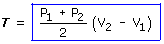
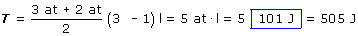
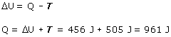

|
Área del trapecio:
(Base 1 + Base 2)·Altura /2 |
|
Como la gráfica de la transformación es una recta
se puede obtener el trabajo calculando por geometría el área
comprendida la gráfica de la transformación y el eje
de abscisas

 |
No se sabe si el gas es mono o diatómico, por tanto
se desconoce el calor molar y no se puede calcular directamente el calor
intercambiado
Aplicando el primer principio de la Termodinámica:

|